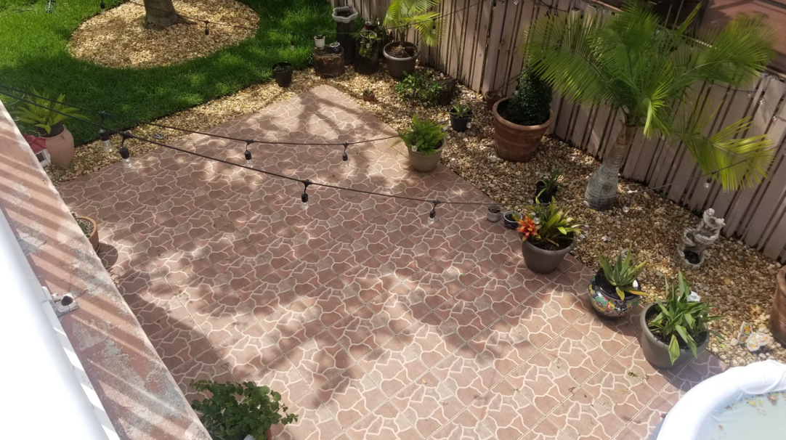

FINAL PROJECT DETAILS - PLANS AND PROTOTYPES
PROJECT PLAN
BILL OF MATERIALS
ESSENTIAL MATERIALS- Gear motor (#3711 488:1 Metal Gearmotor 20Dx46L mm 6V CB) [Quantity: 2]
- Motor Brackets (#1138 Pololu 20D mm Metal Gearmotor Bracket Pair)
- Motor encoder (#3499 Magnetic Encoder Pair Kit for 20D mm Metal Gearmotors, 20 CPR, 2.7-18V)
- Motor Controller (#1112 Pololu Qik 2s12v10 Dual Serial Motor Controller)
- Motor Controller (#1110 Pololu Qik 2s9v1 Dual Serial Motor Controller)
- AA Batteries (1.5V each) [Quantity: 2]
- Flower Pot Platform
- Micro Motor (#3070 1000:1 Micro Metal Gearmotor HPCB 6V)
- Motor Brackets (#1086 Pololu Micro Metal Gearmotor Bracket Pair - White)
- Micro Motor encoder (#4760 Magnetic Encoder Pair Kit with Top-Entry Connector for Micro Metal Gearmotors, 12 CPR, 2.7-18V)
- Wheels (Pololu Multi-Hub Wheel w/Inserts for 3mm and 4mm Shafts - 80×10mm, Black, 2-Pack) [Quantity: 2]
** Second pot **
- Colored panels
- Battery Box
- Huzzah Board [Quantity: 2]
- Huzzah Board [Quantity: 1]
- Ultrasonic sensors [Quantity: 2]
- Caster Wheel [Quantity: 4]
- Flower Plant Platform [Quantity: 1]
- Kinect [Quantity: 1]
- Photoresistor [Quantity: 2]
- Motor controller
- Light sensor ***
- Encoder
CACLCULATING DESIGN SPECIFICATOINS
Choosing a motor:Calculating necessary torque

MIN DESIGN: MINIMUM VIABLE DESIGN
Description here...MAX DESIGN: ALL THE BELLS AND WHISTLES
Description here...PROTOTYPES
Spiral developing approach. Description here...PROTOTYPE # 1
How the device will move around in the patio is still an idea in progress. There are a couple of floating ideas. I present them here from easiest to most difficult to implement. The patio space that the devices will be navigating in is shown in the picturebelow.
 PROOF OF CONCEPT
PROOF OF CONCEPT This goal of the first protoype is to demonstrate that the different aspects of the design work individually. The different aspects include:
- Sizing: do all the components fit within the ocnstraints of the pltform size
- Sensing: does the photosensing components have enough resolution to detect the difference between "sun" and "shade"?
- Crash sensing: does the ultrasonic sensor detect a possible crash?
- Movement: do the motors provide enough torque to move the device?
- Steering: do we have the means to determine absolute position, orientation, or borders of a map, in which we can instruct the device to move within the patio area? CAD
ELECTRONICS SCHEMATIC